ESOs: Introduction
In this tutorial we review the accounting and valuation treatment of employee stock options (ESOs) and illustrate the best ways for investors to incorporate them into their analysis of stock. In the next section, we begin with a summary of the accounting treatment of ESOs, and then in the third and fourth sections we progress into a review of the primary options-pricing models: the Black-Scholes and its likely successor in 2005, the binomial model. In the fifth and sixth sections, we will consider adjustments you can make to incorporate the cost impact of stock options into your equity valuations.
ESOs: Accounting For Employee Stock Options
Relevance above Reliability
We will not revisit the heated debate over whether companies should "expense" employee stock options. However, we should establish two things. First, the experts at the Financial Accounting Standards Board (FASB) have wanted to require options expensing since around the early 1990s. Despite political pressure, expensing became more or less inevitable when the International Accounting Board (IASB) required it because of the deliberate push for convergence between U.S. and international accounting standards. (For related reading, see The Controversy Over Option Expensing.)
Second, among the arguments there is a legitimate debate concerning the two primary qualities of accounting information: relevance and reliability. Financial statements exhibit the standard of relevance when they include all material costs incurred by the company - and nobody seriously denies that options are a cost. Reported costs in financial statements achieve the standard of reliability when they are measured in an unbiased and accurate manner.
These two qualities of relevance and reliability often clash in the accounting framework. For example, real estate is carried at historical cost because historical cost is more reliable (but less relevant) than market value - that is, we can measure with reliability how much was spent to acquire the property. Opponents of expensing prioritize reliability, insisting that option costs cannot be measured with consistent accuracy. FASB wants to prioritize relevance, believing that being approximately correct in capturing a cost is more important/correct than being precisely wrong in omitting it altogether.
Disclosure Required But Not Recognition … For Now
As of March 2004, the current rule (FAS 123) requires "disclosure but not recognition". This means that options cost estimates must be disclosed as a footnote, but they do not have to be recognized as an expense on the income statement, where they would reduce reported profit (earnings or net income). This means that most companies actually report four earnings per share (EPS) numbers - unless they voluntarily elect to recognize options as hundreds have already done:
| On the Income Statement: | 1. Basic EPS
2. Diluted EPS |
| In a Footnote: | 1. Pro Forma Basic EPS
2. Pro Forma Diluted EPS |
Diluted EPS Captures Some Options - Those That Are "Old" and "In the Money"
A key challenge in computing EPS is potential dilution. Specifically, what do we do with outstanding but un-exercised options, "old" options granted in previous years that can easily be converted into common shares at any time? (This applies to not only stock options, but also convertible debt and some derivatives.) Diluted EPS tries to capture this potential dilution by use of the treasury-stock method illustrated below. Our hypothetical company has 100,000 common shares outstanding, but also has 10,000 outstanding options that are all in the money. That is, they were granted with a $7 exercise price but the stock has since risen to $20:

|
Basic EPS (net income / common shares) is simple: $300,000 / 100,000 = $3 per share. Diluted EPS uses the treasury-stock method to answer the following question: hypothetically, how many common shares would be outstanding if all in-the-money options were exercised today? In the example discussed above, the exercise alone would add 10,000 common shares to the base. However, the simulated exercise would provide the company with extra cash: exercise proceeds of $7 per option, plus a tax benefit. The tax benefit is real cash because the company gets to reduce its taxable income by the options gain - in this case, $13 per option exercised. Why? Because the IRS is going to collect taxes from the options holders who will pay ordinary income tax on the same gain. (Please note the tax benefit refers to non-qualified stock options. So-called incentive stock options (ISOs) may not be tax deductible for the company, but fewer than 20% of options granted are ISOs.)
Let's see how 100,000 common shares become 103,900 diluted shares under the treasury-stock method, which, remember, is based on a simulated exercise. We assume the exercise of 10,000 in-the-money options; this itself adds 10,000 common shares to the base. But the company gets back exercise proceeds of $70,000 ($7 exercise price per option) and a cash tax benefit of $52,000 ($13 gain x 40% tax rate = $5.20 per option). That is a whopping $12.20 cash rebate, so to speak, per option for a total rebate of $122,000. To complete the simulation, we assume all of the extra money is used to buy back shares. At the current price of $20 per share, the company buys back 6,100 shares.
In summary, the conversion of 10,000 options creates only 3,900 net additional shares (10,000 options converted minus 6,100 buyback shares). Here is the actual formula, where ($M) = current market price, ($E) = exercise price, (T%) = tax rate and (N) = number of options exercised:
| 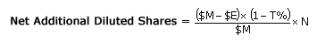 |
{kind=link}
Pro Forma EPS Captures the "New" Options Granted During the Year
We have reviewed how diluted EPS captures the effect of outstanding or old in-the-money options granted in previous years. But what do we do with options granted in the current fiscal year that have zero intrinsic value (that is, assuming the exercise price equals the stock price), but are costly nonetheless because they have time value? The answer is that we use an options-pricing model to estimate a cost to create a non-cash expense that reduces reported net income. Whereas the treasury-stock method increases the denominator of the EPS ratio by adding shares, pro forma expensing reduces the numerator of EPS. (You can see how expensing does not double count as some have suggested: diluted EPS incorporates old options grants while pro forma expensing incorporates new grants.)
We review the two leading models, Black-Scholes and binomial, in the next two installments of this series, but their effect is usually to produce a fair value estimate of cost that is anywhere between 20% and 50% of the stock price. While the proposed accounting rule requiring expensing is very detailed, the headline is "fair value on the grant date". This means that FASB wants to require companies to estimate the option's fair value at the time of grant and record ("recognize") that expense on the income statement. Consider the illustration below with the same hypothetical company we looked at above:
| 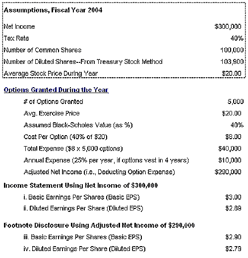 |
| (1) Diluted EPS is based on dividing adjusted net income of $290,000 into a diluted share base of 103,900 shares. However, under pro forma, the diluted share base can be different. See our technical note below for further details. |
{kind=link}
First, we can see that we still have common shares and diluted shares, where diluted shares simulate the exercise of previously granted options. Second, we have further assumed that 5,000 options have been granted in the current year. Let's assume our model estimates that they are worth 40% of the $20 stock price, or $8 per option. The total expense is therefore $40,000. Third, since our options happen to cliff vest in four years, we will amortize the expense over the next four years. This is accounting's matching principle in action: the idea is that our employee will be providing services over the vesting period, so the expense can be spread over that period. (Although we have not illustrated it, companies are allowed to reduce the expense in anticipation of option forfeitures due to employee terminations. For example, a company could predict that 20% of options granted will be forfeited and reduce the expense accordingly.)
Our current annual expense for the options grant is $10,000, the first 25% of the $40,000 expense. Our adjusted net income is therefore $290,000. We divide this into both common shares and diluted shares to produce the second set of pro forma EPS numbers. These must be disclosed in a footnote, and will very likely require recognition (in the body of the income statement) for fiscal years that start after Dec 15, 2004.
A Final Technical Note for the Brave
There is a technicality that deserves some mention: we used the same diluted share base for both diluted EPS calculations (reported diluted EPS and pro forma diluted EPS). Technically, under pro forma diluted ESP (item iv on the above financial report), the share base is further increased by the number of shares that could be purchased with the "un-amortized compensation expense" (that is, in addition to exercise proceeds and the tax benefit). Therefore, in the first year, as only $10,000 of the $40,000 option expense has been charged, the other $30,000 hypothetically could repurchase an additional 1,500 shares ($30,000 / $20). This - in the first year - produces a total number of diluted shares of 105,400 and diluted EPS of $2.75. But in the forth year, all else being equal, the $2.79 above would be correct as we would have already finished expensing the $40,000. Remember, this only applies to the pro forma diluted EPS where we are expensing options in the numerator!
Conclusion
Expensing options is merely a best-efforts attempt to estimate options cost. Proponents are right to say that options are a cost, and counting something is better than counting nothing. But they cannot claim expense estimates are accurate. Consider our company above. What if the stock dove to $6 next year and stayed there? Then the options would be entirely worthless, and our expense estimates would turn out to be significantly overstated while our EPS would be understated. Conversely, if the stock did better than expected, our EPS numbers would've been overstated because our expense would've turned out to be understated.
ESOs: Using the Black-Scholes Model
Companies need to use an options-pricing model in order to "expense" the fair value of their employee stock options (ESOs). Here we show how companies produce these estimates under the rules in effect as of April 2004.
An Option Has a Minimum Value
When granted, a typical ESO has time value but no intrinsic value. But the option is worth more than nothing. Minimum value is the minimum price someone would be willing to pay for the option. It is the value advocated by two proposed pieces of legislation (the Enzi-Reid and Baker-Eshoo congressional bills). It is also the value that private companies can use to value their grants.
If you use zero as the volatility input into the Black-Scholes model, you get the minimum value. Private companies can use the minimum value because they lack a trading history, which makes it difficult to measure volatility. Legislators like the minimum value because it removes volatility - a source of great controversy - from the equation. The high-tech community in particular tries to undermine the Black-Scholes by arguing that volatility is unreliable. Unfortunately, removing volatility creates unfair comparisons because it removes all risk. For example, a $50 option on Wal-Mart stock has the same minimum value as a $50 option on a high-tech stock.
Minimum value assumes that the stock must grow by at least the risk-less rate (for example, the five or 10-year Treasury yield). We illustrate the idea below, by examining a $30 option with a 10-year term and a 5% risk-less rate (and no dividends):
| 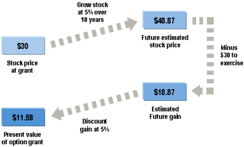 |
{kind=link}
You can see that the minimum-value model does three things: (1) grows the stock at the risk-free rate for the full term, (2) assumes an exercise and (3) discounts the future gain to the present value with the same risk-free rate.
Calculating the Minimum Value
If we expect a stock to achieve at least a risk-less return under the minimum-value method, dividends reduce the value of the option (as the options holder forgoes dividends). Put another way, if we assume a risk-less rate for the total return, but some of the return "leaks" to dividends, the expected price appreciation will be lower. The model reflects this lower appreciation by reducing the stock price.
In the two exhibits below we derive the minimum-value formula. The first shows how we get to a minimum value for a non-dividend-paying stock; the second substitutes a reduced stock price into the same equation to reflect the reducing effect of dividends.
Here is the minimum value formula for a dividend-paying stock: 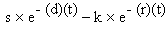
{kind=link}
s = stock price
e = Euler's constant (2.718…)
d = dividend yield
t = option term
k = exercise (strike) price
r = risk-less rate
Don't worry about the constant e (2.718…); it is just a way to compound and discount continuously instead of compounding at annual intervals.
| 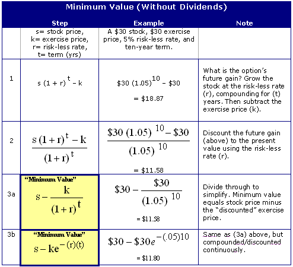 |
{kind=link}
| 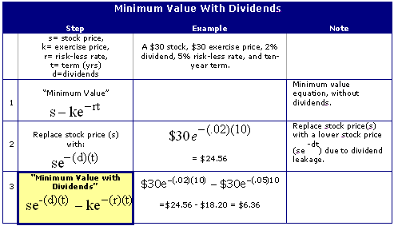 |
{kind=link}
Black-Scholes = Minimum Value + Volatility
We can understand the Black-Scholes as being equal to the option's minimum value plus additional value for the option's volatility: the greater the volatility, the greater the additional value. Graphically, we can see minimum value as an upward-sloping function of the option term. Volatility is a "plus-up" on the minimum value line.
| 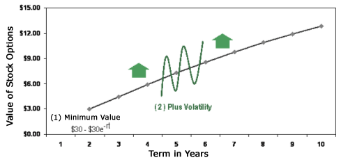 |
{kind=link}
Those who are mathematically inclined may prefer to understand the Black-Scholes as taking the minimum-value formula we have already reviewed and adding two volatility factors (N1 and N2). Together, these increase the value depending on the degree of volatility.
| 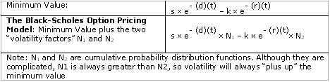 |
{kind=link}
Black-Scholes Must Be Adjusted for ESOs
Black-Scholes estimates the fair value of an option. It is a theoretical model that makes several assumptions, including the full trade-ability of the option (that is, the extent to which the option can be exercised or sold at the options holder's will) and a constant volatility throughout the option's life. If the assumptions are correct, the model is a mathematical proof and its price output must be correct.
But strictly speaking, the assumptions are probably not correct. For example, it requires stock prices to move in a path called the Brownian motion - a fascinating random walk that is actually observed in microscopic particles. Many studies dispute that stocks move only this way. Others think Brownian motion gets close enough, and consider the Black-Scholes an imprecise but usable estimate. For short-term traded options, the Black-Scholes has been extremely successful in many empirical tests that compare its price output to observed market prices.
There are three key differences between ESOs and short-term traded options (which are summarized in the table below). Technically, each of these differences violates a Black-Scholes assumption - a fact contemplated by the accounting rules in FAS 123. These included two adjustments or "fixes" to the model's natural output, but the third difference - that volatility cannot hold constant over the unusually long life of an ESO - was not addressed. Here are the three differences and the proposed valuation fixes proposed in FAS 123 that are still in effect as of March 2004.
| 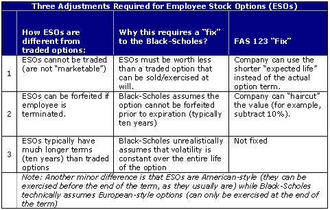 |
{kind=link}
The most significant fix under current rules is that companies can use "expected life" in the model instead of the actual full term. It is typical for a company to use an expected life of four to six years to value options with 10-year terms. This is an awkward fix - a band-aid, really - since Black-Scholes requires the actual term. But FASB was looking for a quasi-objective way to reduce the ESO's value since it is not traded (that is, to discount the ESO's value for its lack of liquidity).
Conclusion - Practical Effects
The Black-Scholes is sensitive to several variables, but if we assume a 10-year option on a 1% dividend-paying stock and a risk-less rate of 5%, the minimum value (assumes no volatility) gives us 30% of the stock price. If we add expected volatility of, say, 50%, the option value roughly doubles to almost 60% of stock price.
So, for this particular option, Black-Scholes gives us 60% of stock price. But when applied to an ESO, a company can reduce the actual 10-year term input to a shorter expected life. For the example above, reducing the 10-year term to a five-year expected life brings the value down to about 45% of face value (and a reduction of at least 10-20% is typical when reducing the term to the expected life). Finally, the company gets to take a haircut reduction in anticipation of forfeitures due to employee turnover. In this regard, a further haircut of 5-15% would be common. So, in our example, the 45% would be further reduced to an expense charge of about 30-40% of stock price. After adding volatility and then subtracting for a reduced expected-life term and expected forfeitures, we are almost back to the minimum value!
ESOs: Using the Binomial Model
On April 1, 2004, the Financial Accounting Standards Board (FASB) published a proposal on the new accounting treatment of employee stock options ESOs. The final rules will probably be issued sometime in the fall of 2004. But the final rules will most likely resemble the proposal: FASB has rejected - clearly to its own satisfaction - the most visible and obvious criticisms of the proposal to "expense" stock options.
Currently, most companies use the Black-Scholes options-pricing model to price their ESOs. The new rules, however, encourage - but do not require - companies to use the binomial model. We can therefore expect companies to shift to the binomial in the next annual report season. In this section, we explain the idea behind the binomial model.
The Binomial Builds a Tree of Future Stock Prices
The Black-Scholes is a closed-form model, which means it solves for, or 'deduces', an option's price from an equation. In contrast, the binomial is an open-form or lattice model. It creates a tree of possible future stock-price movements and 'induces' the option's price. Let's start with a single-step binomial. Assume we grant an option on a $10 stock that will expire in one year. We also assume there is a 50% chance that the price will jump 12% over the year and a 50% chance that the stock will drop 12%.
| 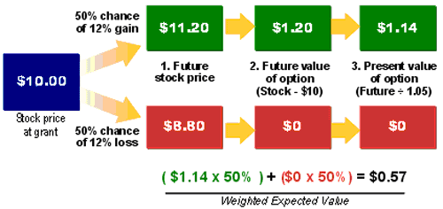 |
{kind=link}
There are three basic calculations. First, we plot the two possible future stock prices. Second, we translate the stock prices into future options values: at the end of the year, this option will be worth either $1.20 or nothing. Third, we discount the future values into a single present value. In this case, the $1.20 discounts to $1.14 because we assume a 5% risk-less rate. After we weight each possible outcome by 50%, the single-step binomial says our option is worth $0.57 at grant.
A full-fledged binomial simply extends this one-step model into a random walk of many steps (or intervals). As such, calculating the binomial involves the same three basic actions. First, the tree of possible future stock prices is constructed, and the volatility input determines the magnitude of each up or down jump. Second, the future stock prices are translated into option values at each interval on the tree. Third, these future option values are discounted back to a single present value. This third step is called backward induction.
| 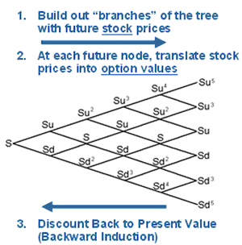 |
{kind=link}
Backward induction simply starts with the final options values and works backward through a series of one-step mini-models. For example, the options value for Su4 above (the next-to-last value at the top of the tree) is just a weighted blend of the two final nodes that come after it. And Su3 becomes a weighted blend of the Su4 and Su2, and so on until the model converges to a single option value - in present-value terms - at the front of the tree.
The Binomial Tree Values an American-Style Option with Flexibility
A big advantage of the binomial is that it can value an American-style option, which can be exercised before the end of its term, and it is the style of option ESOs usually take. The model achieves this valuation capacity by comparing the calculated value at each node (as above) to the intrinsic value at that node. In the few cases where intrinsic value is greater, the model assumes the option is worth the intrinsic value at the node. This has the overall effect of increasing the value of the American-style option relative to a European-style option, as some of the nodes are increased.
You can see that the binomial is a brute-force model that can be constructed with almost unlimited flexibility. The FASB prefers the binomial model because it can build-in the unique features of an ESO.
Consider two key features that the FASB recommends companies build into the binomial model: vesting restrictions and early exercise.
| 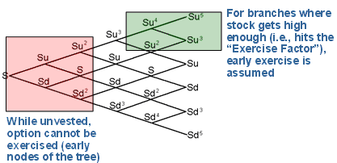 |
{kind=link}
The binomial tree above is the same as before, except with two differences. First, because the option is un-vested in the early years, the model does not assume any early exercises during these years (which would be done to redeem high intrinsic values in the upward jumping paths). Second - and this is a key difference - the binomial allows for an exercise factor. FASB calls this a "suboptimal exercise factor". An exercise factor of 2x, for example, allows the model to assume that employees will exercise the option if the stock price increases to double (2x) the exercise price. The idea behind this factor is simply to anticipate early exercise of in-the-money options under favorable circumstances. If the exercise factor is triggered, the option is assumed to be exercised, and the binomial tree basically stops on that node.
You can see these two features reduce the value of the option, all other things being equal. The un-vested section of the model limits the value at each node to the discounted value of the two future nodes (even where the intrinsic value is greater and would therefore be normally used instead). The exercise factor eliminates additional value that could accrue to the option if it were to continue to ride the upward trajectory.
The New Accounting Rule Favors the Binomial
The proposed accounting rule (amended SFAS 123) favors the binomial for pricing ESOs. As companies shift from the Black-Scholes to the binomial, there are four key differences in the valuation methods to note:
| 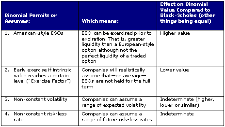 |
{kind=link}
Keep in mind that ESOs are far less liquid than traded options as an employee cannot sell his or her option on a public exchange. You may recall that the Black-Scholes handles this with a band-aid solution: companies use a reduced 'expected life' instead of the full 10-year term as an input into the Black-Scholes. Because the binomial model already builds-in these illiquidity factors through the vesting restrictions and early exercise assumptions, the binomial accepts the full 10-year term as an input.
Practical Implications
The binomial contains more assumptions than the Black-Scholes. Some have argued that the binomial will produce dramatically lower expense estimates than the Black-Scholes, but this is not necessarily the case.
Switching from Black-Scholes to binomial can slightly increase, maintain or decrease the options expense. Certainly if a company sets an aggressively low exercise factor like 1.25x (which would assume employees will exercise their options when the stock is 25% above the exercise price), then the binomial will produce a lower estimate of value. On the other hand, if all of the inputs are unchanged and the exercise factor is high, options' value under the binomial may increase because it incorporates the additional value of American-style ESOs, which can be exercised early.
Of course a company can also try to bring about a lower value by tweaking the inputs as it switches models. For example, shifting from 40% volatility under Black-Scholes to a volatility range of 20% to 40% under the binomial is likely to produce a lower options value. But, in this example, the real cause for a lower value is not a change in options-pricing models so much as reduction in average volatility from 40-30%.
Below we compare the Black-Scholes value to the binomial value for an option on a $100 stock. We've used the same volatility for both models, so the primary valuation difference is reduced to (1) the expected-life input used in the Black-Scholes compared to (2) the exercise factor used in the binomial. Other variables matter, of course, but this is the key difference between the models when the same volatility is used. You can see that, when you put everything together, the binomial could be higher, lower or similar to the Black-Scholes.
| 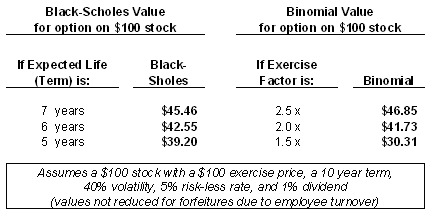 |
{kind=link}
Summary
This and the previous section of this feature summarize two different approaches to estimating the fair value of an ESO at the time it is granted. Under the proposed rules, this fair value must be recognized as an expense on income statements with fiscal years starting after Dec 15, 2004.
If there were a public market or exchange for trading ESOs, the company could and would use market prices. Lacking that, the binomial model represents an attempt to fine-tune the theoretically correct fair value of an ESO given its unique features. However, it is just an attempt to capture fair value at grant, in light of future uncertainty. The ultimately realized cost of the option will depend on the future stock-price trajectory, which is likely to diverge from the fair value.
ESOs: Dilution - Part 1
Investors clearly care about the cost of employee stock options (ESOs), but they do not yet agree on the single best method for capturing the ESOs' economic cost. In the preceding sections of this feature, we focus on the accounting treatment and valuation of employee stock options. In this section and the final one of this feature, we review ways to assess the economic impact of ESOs.
We will review four methods used to assess the economic impact of ESOs in order of their increasing accuracy and complexity. Here, we review diluted EPS, equity overhang and economic overhang. In the final section of this feature, we will show how to apply the cash-flow method, which is the most accurate but also the most complicated. For all methods, we will use actual data from Motorola's 2003 Annual Report (Form 10K, Ticker: MOT).
Pro Forma Diluted EPS
The easiest approach is to check a company's pro forma diluted earnings per share (EPS). Here are selected lines from Motorola's income statement for the year that ended December 31, 2003:
| 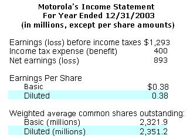 |
{kind=link}
On Motorola's income statement, diluted EPS equals basic EPS. These are both reported EPS numbers - that is, they appear in the body of the income statement. But, because these numbers are rounded, it only appears as though they are equal: diluted EPS is actually half a penny lower (net earnings of $893/diluted shares of 2,351.2 = $0.3798 whereas basic EPS is $0.3846). Nevertheless, Motorola illustrates the problem of relying solely on diluted EPS: in Motorola's case, it implies that stock options create no dilution.
The reported diluted EPS shown above captures only the cost of outstanding options granted in previous years. In order to include the cost of options granted in the current year, we need to look at pro forma diluted EPS, which is shown in a footnote.
Here is footnote No.1 to Motorola's income statement:
| 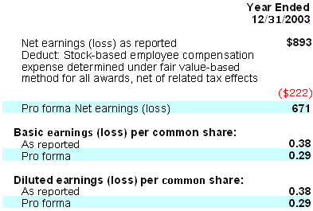 |
{kind=link}
In Motorola's case, the fair value expense of options granted during 2003 was $222 million, which reduced reported net earnings of $893 to pro forma net earnings of $671 million. Pro forma diluted EPS should incorporate all options: the 'pro forma' component captures the current options grants and the 'diluted' component captures the outstanding (historical) grants.
However, as the first part of this feature shows, diluted EPS only captures the impact of in-the-money options. And for these, it credits their intrinsic value, but not their time value. At-the-money and out-of-the-money options are entirely excluded, as they have no intrinsic value.
In footnote No.6, Motorola summarizes information about all outstanding options:
| 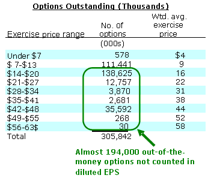 |
{kind=link}
Because Motorola's average share price during 2003 was about $11.77, most of the outstanding options were not included in diluted EPS (about 194 million out of about 306 million). However, many of these are only a few dollars out-of-the-money (about 138.6 million out of about 194 million have a weighted average exercise price of $16).
The easiest way to assess options dilution is to complement pro forma diluted EPS with a careful look at outstanding out-of-the-money options, since they are left out of the calculation. In Motorola's case, we can take the pro forma diluted EPS of $0.29 and further consider outstanding options to account for an additional 8% of the share base (194 million out-of-the-money options/2.351 billion diluted shares).
"Simple" Equity Overhang
A popular way to gauge ESO cost is to measure equity overhang. Equity overhang adds the number of outstanding options, which are those that are already issued, to the number of options available for future grant, which are those that are yet to be issued. Overhang is also called potential dilution. The rationale for including "options available for future grant" is that we can almost always expect them to be issued in the near future.
Normally we would find the "number of options available for future grant" in the 10K footnote that reports options information (footnote No.6 for MOT). Motorola instead reports this number in their proxy statement, where we see they have 136.9 million shares available for future grant. So we have the following information:
| 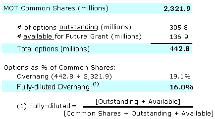 |
{kind=link}
We see that Motorola's basic equity overhang, as of Dec 31, 2003, was 19.1%. This popular measure is really a sort of worst-case dilution scenario: it says that if all of Motorola's options were exercised - including options already issued and those to be issued in the future - then the common share base would increase by about 19%.
Notice we also calculated overhang on a fully diluted basis, where the numerator is added to the denominator. The fully-diluted overhang implies that, after the hypothetical conversion of all options, new shares created (and owned by employees) would represent about 16% of the new common share base. Measuring overhang as fully diluted is technically the preferred way of measuring overhang; although, basic overhang is still used by some.
Economic Overhang
Some institutional shareholders look carefully at equity overhang, but not exactly in the way described above. In calculating Motorola's "simple" equity overhang, we determined that the dilution potential of their options is 16%. However, the problem is that all of Motorola's options are counted equivalently. Many of Motorola's options are out-of-the-money, and they are worth less than at-the-money-options. Some are far out-of-the-money and therefore are barely dilutive.
We can address this problem by estimating economic overhang. Economic overhang is very close to simple overhang: it uses fair values instead of numbers of options. So, consider Motorola's outstanding options.
Below we take the same footnote information and, using an options-pricing model, convert options quantities to fair-value estimates in the right-most column:
| 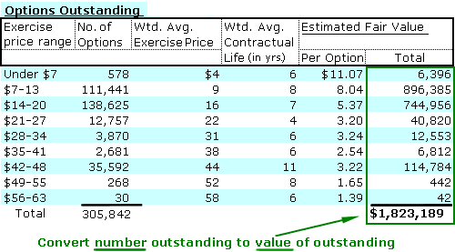 |
{kind=link}
Motorola reports several categories of outstanding options, each of which we converted to a fair-value estimate. In total, the 305 million options outstanding are worth a little more than $1.8 billion.
The only thing we need to do is add the value of options available for future grant. (This is also disclosed in the same footnote, usually with the title "number of securities remaining for future issuance under equity compensation plans".) We assume these will be issued at-the-money:
| 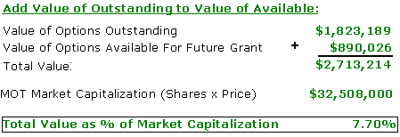 |
{kind=link}
Economic overhang divides the fair-value estimate of all of Motorola's options (about $2.7 billion) into Motorola's market capitalization (which is about $32.5 billion, but we also include the same fair-value estimate of $2.7 billion in order to get a fully diluted market capitalization). The result is 7.7%. In other words, we estimate that if all the outstanding and available options were converted, they would own 7.7% of the equity.
Summary
Motorola has a huge number of outstanding, out-of-the-money ESOs. Diluted EPS does not recognize these and therefore significantly understates the cost of Motorola's options. Equity overhang does include all of the outstanding options, but treats them all the same, and therefore, in Motorola's case, it overstates their dilutive impact or cost. Economic overhang uses a fair-value estimate instead of options quantities, and gives us an improved estimate of dilution.
ESOs: Dilution - Part 2
In the last chapter, we looked at three ways to estimate the economic cost of employee stock options (ESOs). Each of these methods has certain disadvantages, but they can be calculated with relative ease. In this chapter, we review the most accurate way to calculate the true cost of stock options: the cash-flow method. But keep in mind, this method also involves the most assumptions.
Cash Flow Cost of ESOs
From a cash-flow perspective, stock options are not as dilutive as they might appear. Because the employee pays a tax on his or her options gain (in the case of non-qualified options, which are the vast majority), the company gets a tax deduction, which is a cash savings. Consider a regular stock option issued at $10 before the stock jumps to $15. The company gets the $10 in exercise proceeds plus a tax savings. If the company's tax rate is 40%, you can see below how the cash-flow cost of this option is only $3 on a net basis:
| Stock Issued at $15 |
-$15 |
| Exercise Proceeds Received |
+$10 |
| Tax Benefit, 40% of $5 gain |
+$2 |
| Cash Outflow |
-$3 |
Three steps are required to estimate the cash-flow cost of ESOs:
- Estimate the after-tax cash cost of outstanding (already issued) ESOs.
- Estimate the discounted after-tax cash-flow cost of future ESO grants.
- Combine outstanding and future ESO grants; then reduce the "undiluted" share value accordingly.
For this and the chapter before this one, we use actual data from Motorola's (ticker: MOT) 2003 Aannual Report. Like all companies, Motorola must report its outstanding stock options. These are listed at various "exercise price ranges". Assuming a MOT stock price of $14, we can see that most of these outstanding options are out of the money. On the left-hand side of the exhibit below, we show the footnote data as seen in the annual report:
| 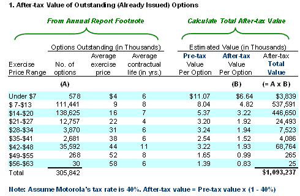 |
{kind=link}
On the right-hand side, we used an options-pricing model to estimate the pre-tax value of these options. By doing so, we capture both an intrinsic value (for the few options that are in the money) and an estimate of time value. Each pre-tax value is converted to an after-tax value, assuming a tax rate of 40%.
So, for example, in the first row we see that Motorola has 578,000 options outstanding at an average exercise price of $4. Given a stock price of $14, our options-pricing model estimates a pre-tax value at $11.07 per option (about $10 of intrinsic value and $1.07 of time value). But because the company saves cash on the tax deduction, we need an after-tax value. In this case, the $11.07 becomes $6.64 as an after-tax cost ($11.07 x [1 – 40% tax rate] = $6.64). Our estimate for the total after-tax costs of all of Motorola's outstanding options is just over a billion dollars.
Step No.2: Estimating the Discounted After-Tax Cash-Flow Cost of Future ESO Grants
The second step is to estimate the cash-flow cost of current and future options grants. The annual report's footnote indicates that MOT granted just over 75 million options in that fiscal year. Let's assume this is a reasonably "normal" level of ESO grants. If we further assume a $14 stock price, a fair-value estimate of 30% (meaning our options-pricing model says the option is worth 30% of stock price) and a 40% tax rate, then the after-tax cost of this grant is about $189 million. See step 2A below:
| 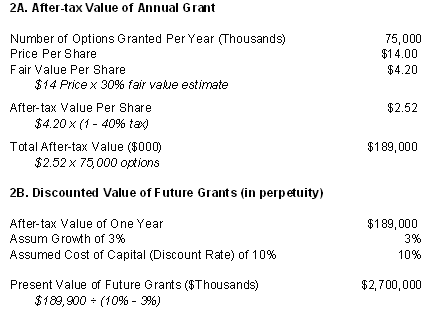 |
{kind=link}
The after-tax cost of $189 million is only the cost of one year's grant. In step 2B we estimate the present value of a future endless stream of grants. In order to value the options grants into perpetuity, we use the Gordon Growth Model (also known as the dividend discount model) where the value of a payment stream is equal to the first payment divided by the discount rate minus the growth rate. If we assume the discount rate to be 10% and the growth rate of the cash cost of the option to be 3% per year, we get a discounted present value of $2.7 billion as in step 2B above.
Step No.3: Combining Cost of Outstanding and Future ESO Grants
The final step is simply to add the two cash flow costs together. As shown below, our estimate of almost $1.1 billion for the outstanding grants plus the $2.7 billion for all future grants equals almost $3.8 billion. This represents about 12% of Motorola's total equity market capitalization. Just for illustration's sake, assume we calculated the intrinsic value of a MOT share - without yet incorporating ESOs - to be $14, the same as the actual share price. In this case, the net cash-flow cost of the ESOs would reduce our intrinsic value by 12%, bringing the $14 down to $12.35.
| 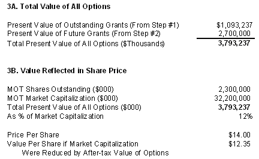 |
{kind=link}
If you are trying to get the most precise measure of ESO cost, the cash-flow method is probably the best. Unlike the other three methods, it arrives at a more complete picture by counting all ESOs (past, present and future), by counting the relative value of ESOs and by incorporating the net cash-flow impact of ESOs. However, in order to achieve this precision, the cash-flow method requires some key assumptions: a fair-value estimate of ESO grants using an options-pricing model and an estimate of the growth in future grants.
Conclusion
Employee stock options are a real cost to shareholders. Although we always know the intrinsic value of an ESO, the true cost is difficult to measure because getting at the time value of an ESO is an attempt to predict the future.
ESOs: Conclusion
Most public companies grant stock options (ESOs) to their employees, and almost everybody agrees that ESOs represent a cost to shareholders, or, to put it differently, that ESOs dilute the ownership of current shareholders. Because of this cost, accounting rules will probably require companies to expense ESOs in order to increase the accuracy of reported profits. There is, however, little consensus on how to calculate the cost of ESOs. As we have throughout this tutorial, any estimate will be imprecise because capturing the full cost of ESOs always requires making assumptions about unknown future events, such as the movement of the stock price, employee turnover and employee exercise behavior.
Because of these assumptions, it is beneficial for investors to understand how accounting rules treat ESOs, and how to improve the accounting numbers to get a clearer picture of the economic impact of ESOs on the valuation of the company. Here is a summary of the perspectives on ESOs that this tutorial covers:
- Diluted EPS is a good start, but it will always underestimate the true cost of ESOs because it omits the time value of all options and therefore does not incorporate out-of-the-money ESOs.
- For accounting purposes, the Black Scholes Model is currently the most popular options-pricing model, but it was designed for options that trade on an exchange and will therefore probably be replaced by the more versatile binomial model.
- For valuation purposes, economic overhang - an improvement over the popular equity overhang - is a good way for investors to assess the dilution impact of ESOs. Finally, the cash-flow method is probably the best, if you have the time to compute it.